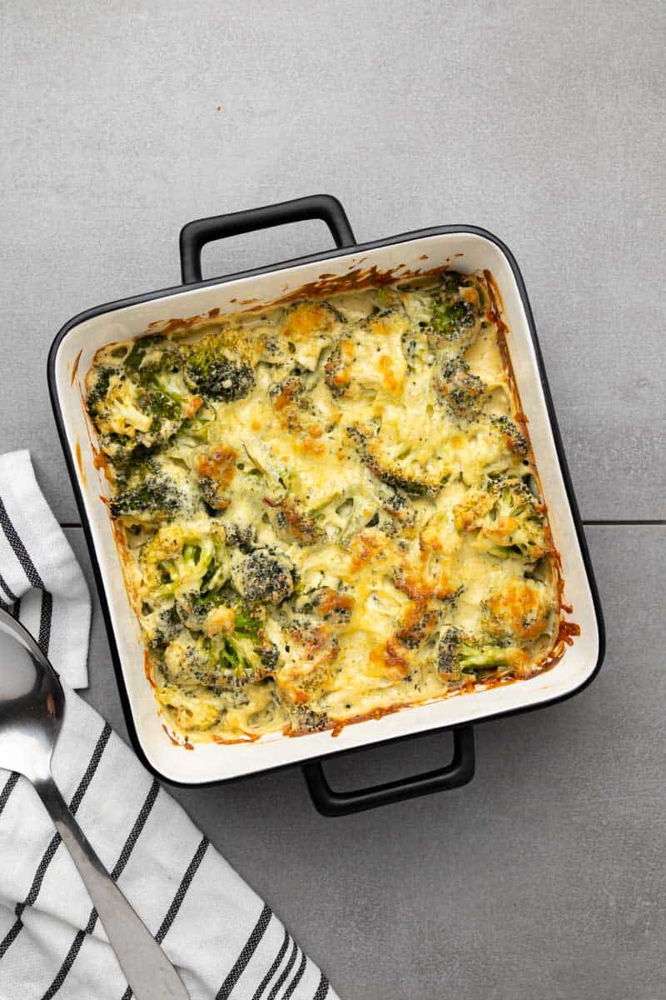

Broccoli casserole

image
source
Description
This easy Keto Broccoli Casserole is comfort food packed with healthy veggies and cheesy goodness. It’s a rich,
creamy, delicious side dish that’s sure to please a crowd!
Ingredients
- 1 1/4 lbs. broccoli
- 2 tablespoon unsalted butter
- 8 oz cream cheese
- 1/2 cup heavy whipping cream
- 1 cup white cheddar cheese (grated)
- 1/4 cup mozzarella cheese (grated)
- 2 cloves garlic (minced)
- 1 tablespoon yellow mustard
- 1 teaspoon dried basil
- 1 teaspoon sea salt
- 1/2 teaspoon black pepper
Steps
-
Preheat your oven to 350F (180°C).
-
Cut the broccoli into florets, grate the cheese, and mince the garlic.
-
Add the butter, cream cheese, and cream to a pot over medium heat. Stir occasionally until everything has
melted together.
-
Turn down the heat and add the grated cheeses, garlic, mustard, basil, salt, and pepper. Stir well until the
cheese has melted completely and the mixture is smooth and creamy.
-
Add the broccoli florets to a square casserole dish and spread them around evenly.
- Pour the melted cheese sauce over the broccoli florets and stir to combine, ensuring all of the broccoli
florets are well-coated.
- Sprinkle a handful of grated mozzarella cheese on top.
- Bake for 30 minutes at 350F until the top is bubbly and slightly browned. Remove from the oven and allow to
cool for 5-10 minutes before serving.
back
{kind=link}